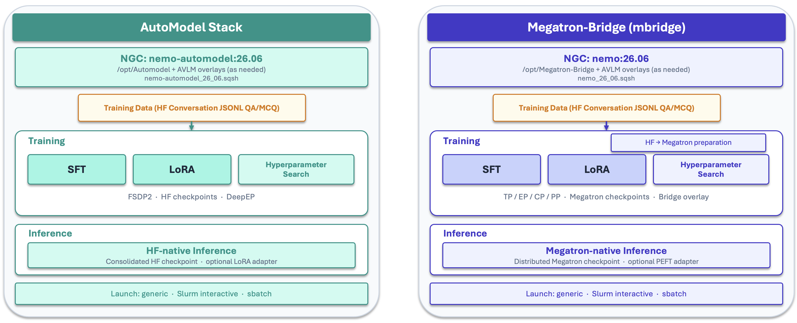

Setup#
AVLM training code lives in the `Sports Intelligence Playbooks` repo. Clone the repo, cd to its root, and run all launch commands from there.
Code Repo#
Entry point:
avlm/training/
Containers#
Use NeMo 26.06 images from NGC. Set CONTAINER_IMAGE in launch_local.yaml to your local enroot/squashfs path (or equivalent).
Megatron-Bridge (SFT, LoRA, conversion): nemo:26.06
NeMo AutoModel (SFT, LoRA): nemo-automodel:26.06
On Slurm clusters with enroot (e.g. Pyxis), convert the NGC Docker image once to a .sqsh squashfs file: it starts jobs without a Docker daemon on compute nodes and can live on shared storage for fast, repeatable launches.
# NeMo AutoModel
enroot import -o nemo-automodel_26_06.sqsh \
docker://nvcr.io/nvidia/nemo-automodel:26.06
# NeMo Framework (Megatron-Bridge)
enroot import -o nemo_26_06_00.sqsh \
docker://nvcr.io/nvidia/nemo:26.06.00
Point CONTAINER_IMAGE at the resulting .sqsh path in launch_local.yaml.
Two Stacks (Pick One)#
NeMo AutoModel (HF) |
Megatron-Bridge (Megatron) |
|
|---|---|---|
Stack |
HuggingFace weights + NeMo AutoModel training loop |
Megatron-format checkpoint + Bridge recipes |
Container |
||
Full SFT |
|
|
LoRA / PEFT |
|
|
GitHub |
||
Docs |
||
Notes |
MoE via DeepEP ( |
Built on Megatron-Core and Megatron-LM (via Bridge); requires a Megatron-format base checkpoint (HF→Meg conversion). |
{kind=link}

Repo Bootstrap (Optional)#
By default, both stacks train against the NeMo container copy of the upstream repo (no git clone, no extra sync):
AutoModel:
/opt/Automodelinnemo-automodel:26.06Megatron-Bridge:
/opt/Megatron-Bridgeand/opt/venvinnemo:26.06
Bootstrap clones or updates the upstream GitHub repo on shared storage so you can pin a specific commit, test a newer upstream fix, or share one checkout across jobs. You must set CACHE_DIR in launch_local.yaml before enabling bootstrap: bootstrap has no default clone location, and this path is where the repos are checked out (${CACHE_DIR}/Automodel and ${CACHE_DIR}/Megatron-Bridge). Use a shared Lustre path your jobs can read.
When AUTOMODEL_GIT_REF or MEGATRON_BRIDGE_GIT_REF is unset, bootstrap pins each clone to the commit that matches the code shipped in the nemo-automodel:26.06 and nemo:26.06 containers, so the Lustre checkout stays aligned with the default image. Set a ref only when you need a different upstream commit.
Warning
Changing the bootstrap source-code version is at your own risk. Other Git refs and code versions are not tested or verified with these playbooks.
NeMo AutoModel
Clone into ${CACHE_DIR}/Automodel (override with AUTOMODEL_GIT_DIR). Bootstrap runs when training starts (_train_env.sh resolves the code root).
# Optional: AUTOMODEL_GIT_REF=<full 40-character SHA> to override the 26.06 default pin
AUTOMODEL_GIT_BOOTSTRAP=1 \
bash avlm/training/automodel/sft/slurm/interactive/train_interactive.sh
To use an existing tree without re-cloning, set AUTOMODEL_CODE_ROOT=/path/to/Automodel instead of bootstrap.
Megatron-Bridge
Clone into ${CACHE_DIR}/Megatron-Bridge (override with MEGATRON_BRIDGE_GIT_DIR). On the first bootstrap run, the repo is cloned and a project virtual environment (.venv) is created.
# Optional: MEGATRON_BRIDGE_GIT_REF=<full 40-character SHA> to override the 26.06 default pin
MEGATRON_BRIDGE_GIT_BOOTSTRAP=1 \
bash avlm/training/megatron-bridge/sft/slurm/interactive/launch_interactive_session.sh
To use an existing clone, set MEGATRON_BRIDGE_ROOT=/path/to/Megatron-Bridge on session launch.
When to Bootstrap
Use bootstrap when you need a different upstream commit than the container or want to test an upstream fix before the next image release. Tradeoffs: bootstrap needs network access and a slower first start (Bridge runs uv sync into a project venv). For most smokes and production runs, leave bootstrap off and use the container checkout.
Megatron-Bridge Only#
HF → Megatron conversion:
avlm/training/megatron-bridge/hf_megatron_conversion/— see MODEL_CONVERSION.MD.Multinode recipes: separate 1-node and multinode YAMLs under
configs/; select viaCONFIG_YAML_RELinlaunch_local.yamlorCONFIG_YAML=on the CLI.
Interactive vs. Sbatch (Slurm)#
Start with interactive training on 1 node (8 GPUs) to smoke-test your recipe, data paths, and overrides before submitting multinode sbatch jobs. Interactive sessions give fast feedback; batch jobs are for longer or multinode runs.
Typical Workflow#
Copy
launch.yaml→launch_local.yamlunder the chosenslurm/(orgeneric/) dir; setCACHE_DIR,CONTAINER_IMAGE, Slurm accounts.Edit the recipe YAML (or
CONFIG_YAML_REL) with your train/val JSONL paths and video root.AutoModel: 1-node interactive smoke (8 GPUs) →
sbatchmultinode as needed (see SFT, LoRA).Megatron-Bridge: run HF→Meg conversion once → 1-node interactive smoke (8 GPUs) →
sbatchmultinode as needed (see SFT, LoRA).